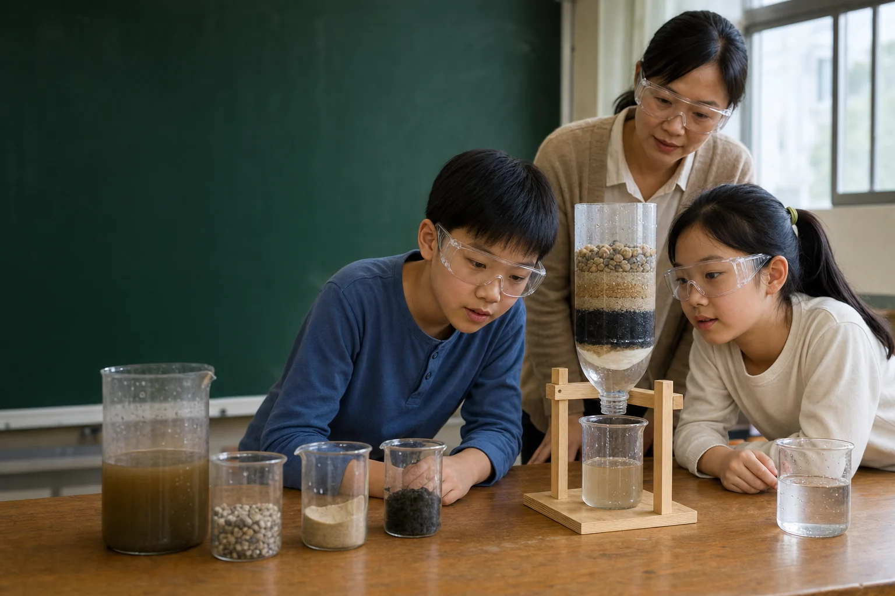
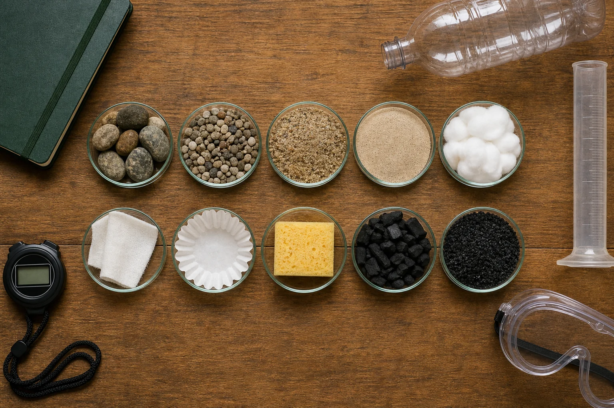
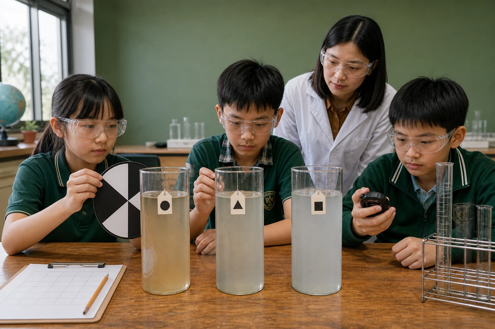

MISSION BRIEF
一場沒有唯一答案的工程挑戰
「最好」必須先說清楚判準。最清澈的配置可能最慢；最快的配置可能攔不住細泥；材料最多也不一定最划算。你要提出可測試問題，取得重複證據，再為自己的設計辯護。
- 我能解釋沉澱、篩濾、吸附。
- 我能一次只改變一個主要變因。
- 我能分開寫觀察、證據、推論。

WATER FILTER INQUIRY LAB · TAIWAN
你的任務不是做出「神奇濾水器」，而是用公平測試找出：不同材料、順序與厚度，怎麼改變清澈度、流速、成本與操作難度。
01看見顆粒
如何被留下
02測量清澈
速度與成本
03用證據改良
不靠直覺猜
MISSION BRIEF
「最好」必須先說清楚判準。最清澈的配置可能最慢；最快的配置可能攔不住細泥；材料最多也不一定最划算。你要提出可測試問題，取得重複證據，再為自己的設計辯護。
FIELD MAP
先建立模型，再動手；先量測，再下結論。
01 · HOW IT WORKS
點選三個階段，觀察污染物停在哪裡。動畫中的顆粒代表「可見或懸浮物模型」，不是依比例畫出的細菌或分子。
02 · MEDIA ATLAS
點選材料查看粒徑、孔隙、主要作用與限制。分數是課堂比較起點，實際結果仍要由你的材料與數據決定。

| 濾材 | 尺度／孔隙 | 主要作用 | 優點 | 限制與問題 |
|---|
03 · BUILD & PREDICT
模型分數只呈現常見取捨，不是真實測量。請把模擬器當成形成假設的工具，再用實驗數據修正它。
示意模型｜實驗水不可飲用
DOWNFLOW
課堂倒置瓶容易製作。建議以進水端的較粗材料分散水流，再進入較細材料；出口用濾紙固定並攔截碳粉。濾層過細或壓太緊會變慢。
UPFLOW
沿流向仍可先粗後細，但需要配水、支撐與防止細砂被沖起的結構。簡單開口瓶不適合自行改成加壓上行裝置；專業上行濾池不可只靠把瓶子翻過來模擬。
04 · FAIR TEST
同批污水、同款容器、同樣體積與倒水方式；一次只改一個主要條件，每個配置至少測三次。

自變因：排列順序
應變因：清澈度、時間、出水量
控制：材料量、瓶型、污水、倒水方式
自變因：細砂厚度
應變因：清澈度、時間、出水量
控制：其他濾層、瓶型、污水
自變因：碳材種類
應變因：顏色、碳粉、流速
控制：粒徑、厚度、預洗、污水
SAFE SIMULATED WATER
禁用：真實污水、池塘水、油、清潔劑、病原體、重金屬與未知化學物。
DIY CLARITY SCALE
圖樣只看得出明暗，記為 1 級。
0＝完全看不見；5＝非常清楚。這不是 NTU，也不能判斷可飲用。DATA TABLE
| 配置 | 次數 | 清澈度 0–5 | 顏色 0–5 | 氣味 0–3 | 100 mL 時間（秒） | 5 分鐘出水量（mL） | 成本（點） |
|---|
05 · REAL WORLD
從自來水廠到咖啡濾紙，材料與目標不同。請找出每個情境借用了哪個原理，以及不能直接類推之處。
06 · FIELD CHECK
10 題不只考名詞。你要判斷安全、辨識公平測試，並解讀清澈度與流速的取捨。
每題作答後立即看解析，也能回到對應教材複習。完成後會保存最佳成績。
EVIDENCE CHECK
07 · SOURCE DESK
資料優先選自政府、NASA、大學工程教育與科學教育機構；英文內容已摘要為繁體中文。所有連結於 2026-08-01 查核。
TEACHER DESK
包含兩節課流程、材料、安全、研究問題、變因、評分規準、資料來源與測試報告。
NEXT QUESTIONS